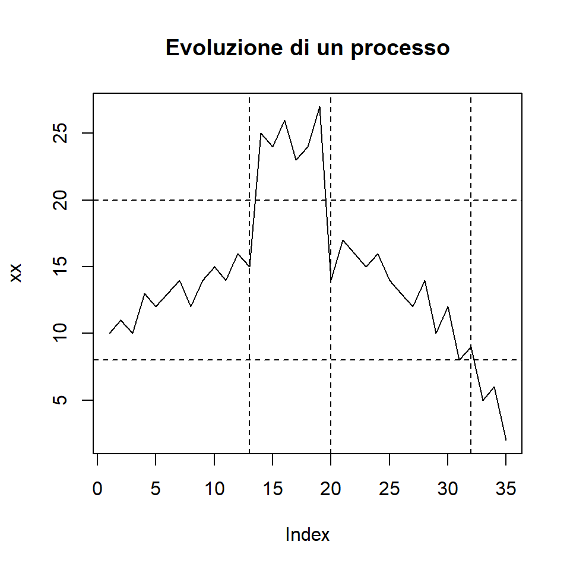
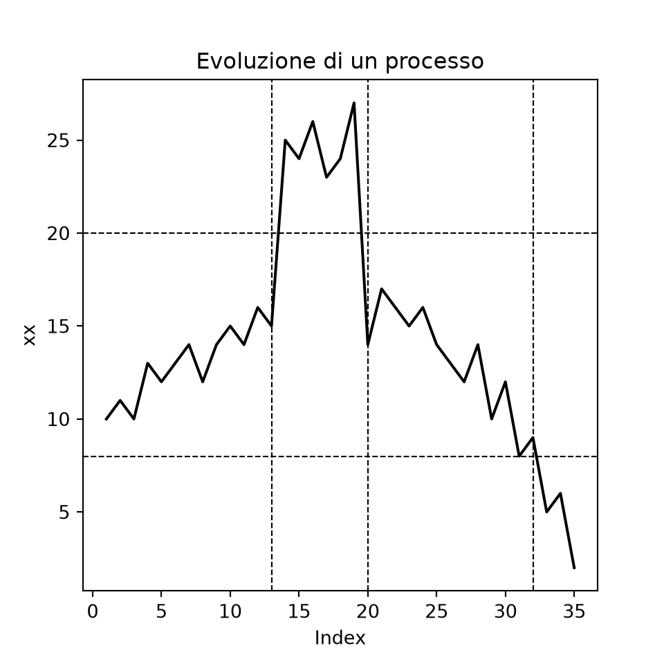
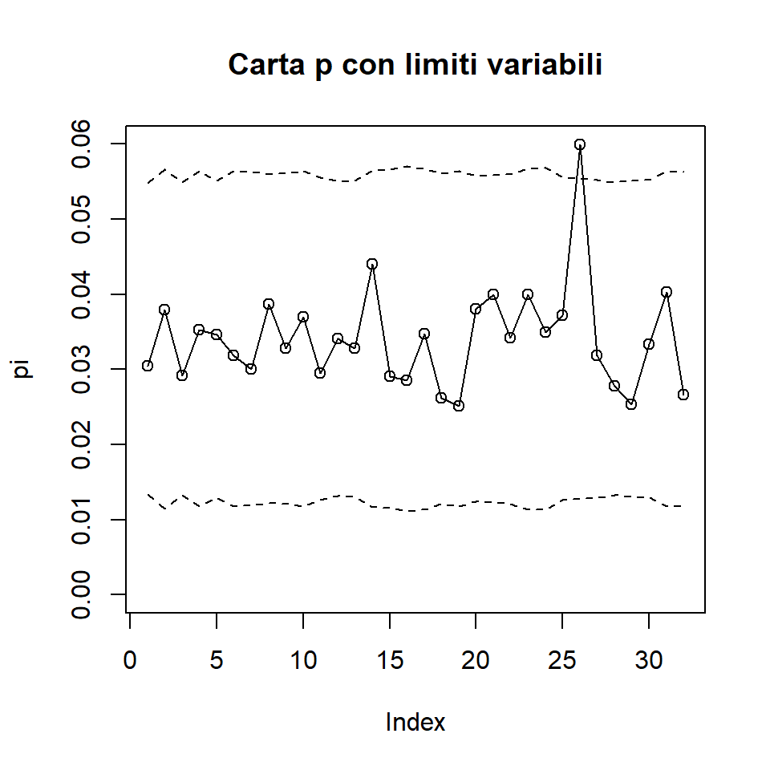
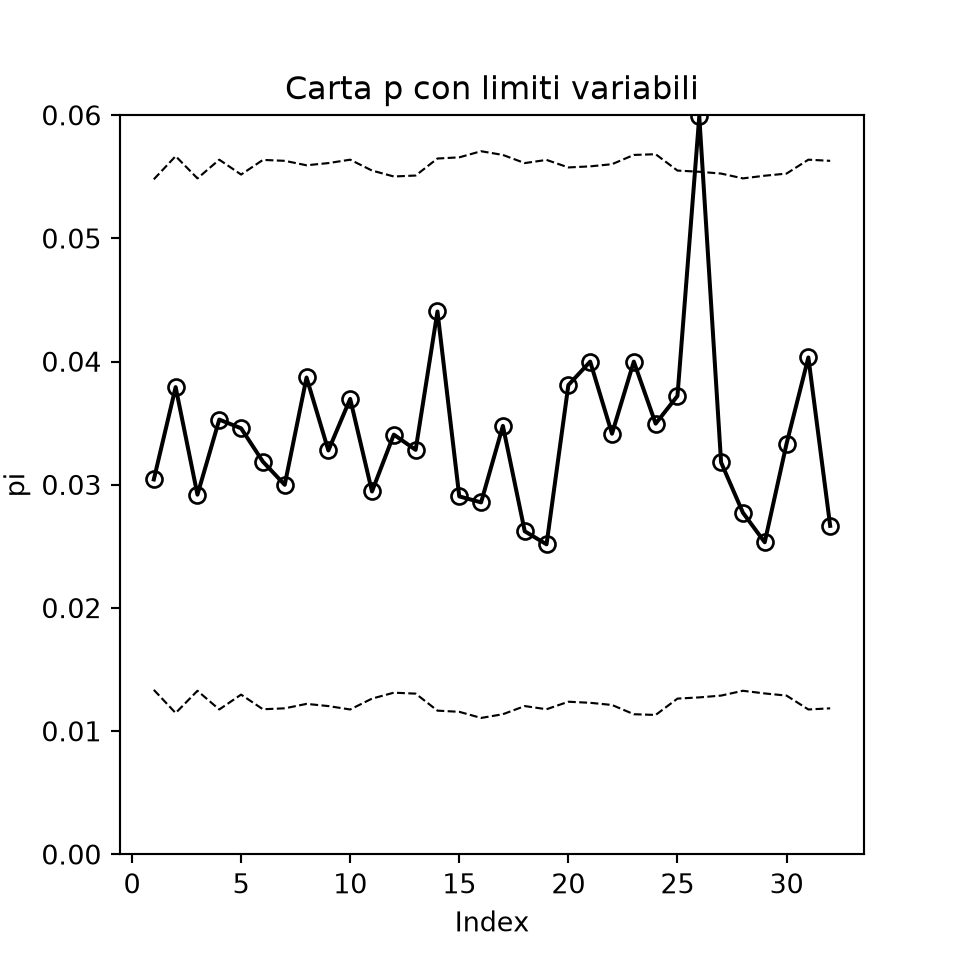
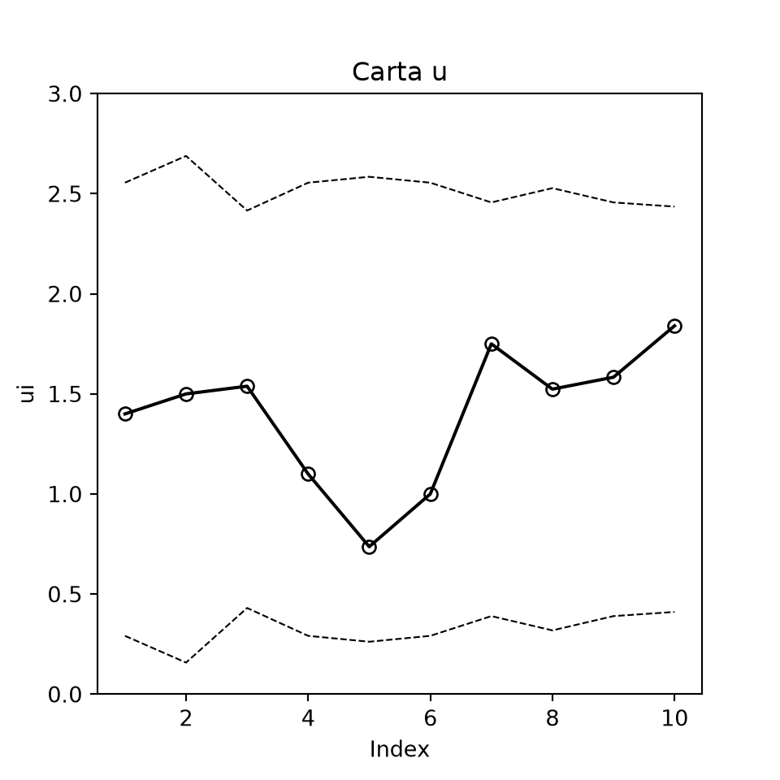
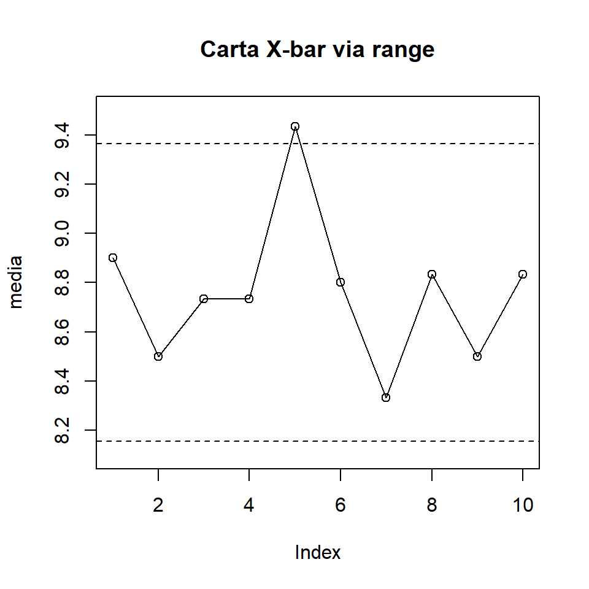
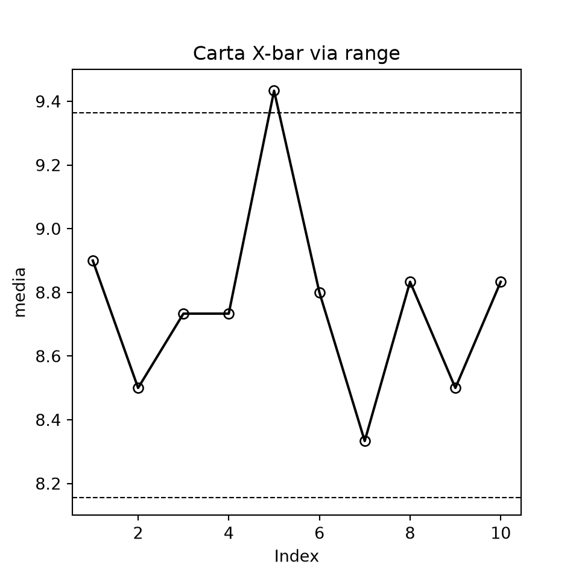
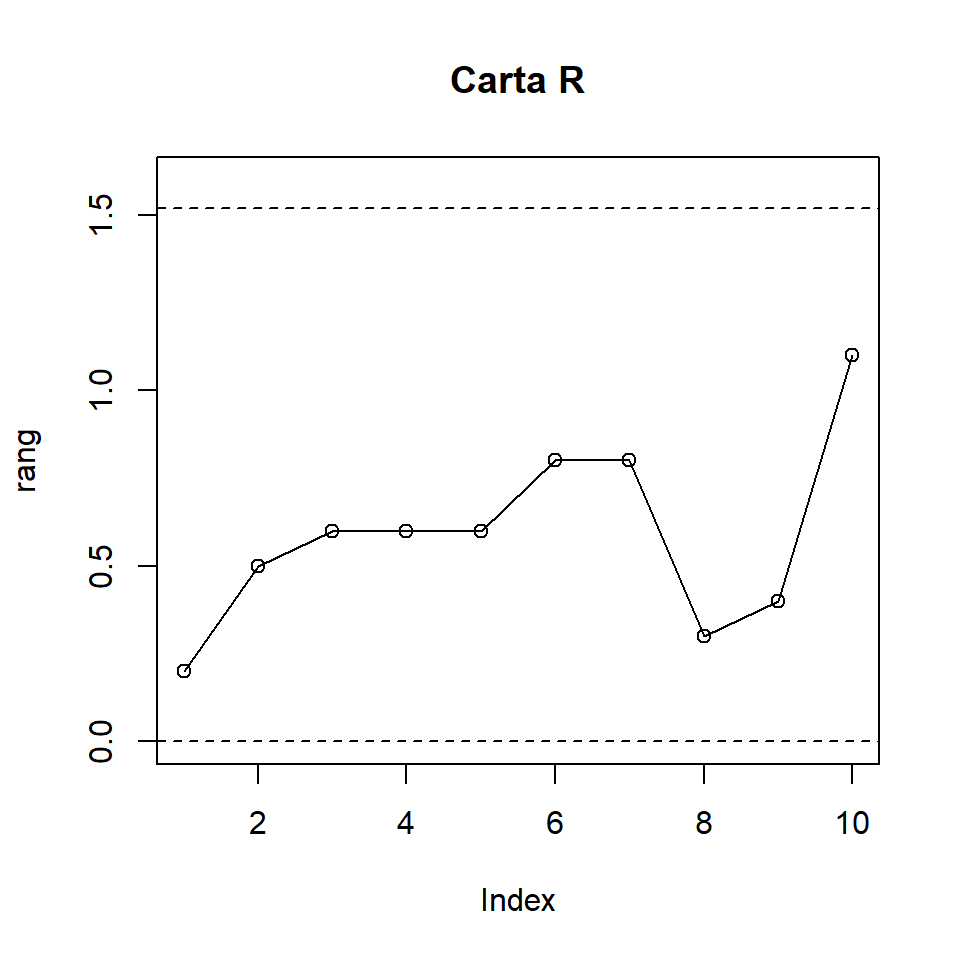
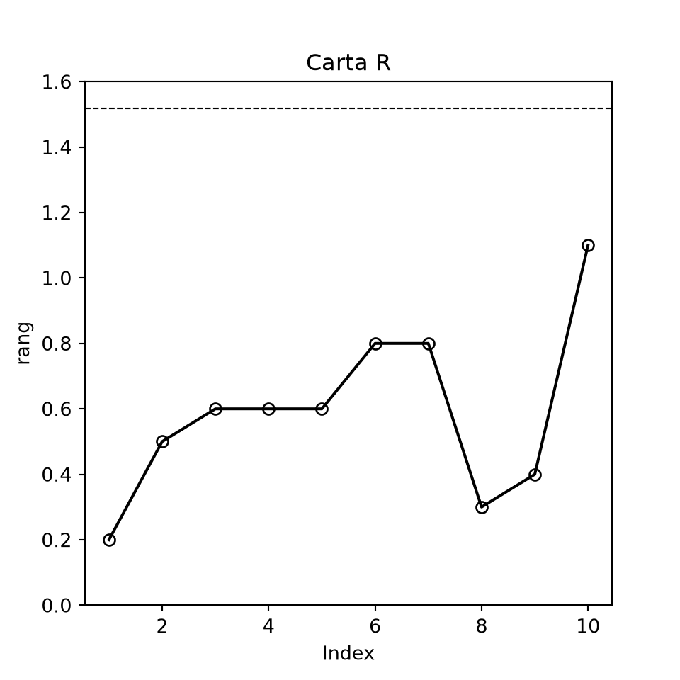

10 Carte di controllo statistico per l’analisi di qualità
10.1 Le carte di controllo e il metodo 3-sigma
La ricerca di una maggiore qualità dei processi produttivi, intesa come aderenza a standard via via più elevati, caratterizza le economie mondiali sin dagli anni ’50. Dall’esperienza giapponese nasce una teoria della qualità totale che punta al controllo e al miglioramento continuo dell’intero processo aziendale, verso una generale ottimizzazione del sistema. Un aspetto importante della ricerca di una maggiore qualità è la conoscenza del processo e il suo controllo, affinché rispetti alcune condizioni che trovano una specifica traduzione in criteri statistici; è, ad esempio, di particolare rilievo la descrizione della variabilità esibita dal processo e l’eventuale presenza di oscillazioni al di fuori della norma. A tale scopo, le carte di controllo rappresentano uno strumento di grande utilità e di semplice lettura.
Le carte di controllo, originariamente proposte da Shewhart, non sono altro che grafici che rappresentano l’evoluzione nel tempo del processo produttivo, ovvero dell’output o di alcune sue caratteristiche. Per esempio, se stiamo monitorando il numero di viti difettose prodotte da una macchina in alcuni periodi di tempo, non ci auguriamo un aumento sistematico dei difetti, o comunque tale da destare la preoccupazione dell’analista circa la necessità di ritarare o persino riparare il macchinario; ma se i difetti sono troppo numerosi, la carta di controllo segnalerà l’anomalia con oscillazioni del processo oltre specifici limiti, solitamente posti a \(\pm 3\sigma\) dal valore medio del processo stesso.
A tal proposito, la Figura 10.1 rappresenta dati di fantasia sul grado di resistenza alla rottura di alcuni chiodi, con rilevazione giornaliera. Il processo mostra un andamento irregolare, con una fase crescente fino alla 13-esima rilevazione, comunque all’interno dei limiti di accettabilità (le linee tratteggiate orizzontali).
xx <-c(10,11,10,13,12,13,14,12,14,15,14,16,15,25,24,26,23,24,27,14,17,16,15,16,14,13,12,14,10,12,8,9,5,6,2) # dati di fantasiaplot(xx, type="l", main="Evoluzione di un processo")abline(h=c(8,20), lty=2)abline(v=c(13,20,32), lty=2)

Figura 10.1 – Descrizione grafica dell’evoluzione di un processo
import numpy as npimport pandas as pdimport matplotlib.pyplot as pltfrom scipy import statsxx = np.array([10, 11, 10, 13, 12, 13, 14, 12, 14, 15, 14, 16, 15, 25, 24, 26, 23, 24, 27,14, 17, 16, 15, 16, 14, 13, 12, 14, 10, 12, 8, 9, 5, 6, 2]) # dati di fantasiaidx = np.arange(1, len(xx) +1)plt.figure(figsize=(5, 5))plt.plot(idx, xx, color="black")for h in (8, 20): plt.axhline(h, color="black", linestyle="--", linewidth=0.8)for v in (13, 20, 32): plt.axvline(v, color="black", linestyle="--", linewidth=0.8)plt.title("Evoluzione di un processo"); plt.xlabel("Index"); plt.ylabel("xx")plt.show()

Figura 10.1 – Descrizione grafica dell’evoluzione di un processo
data processo;input xx @@;t = _n_;datalines;10111013121314121415141615252426232427141716151614131214101289562;run;procsgplotdata=processo noautolegend;title"Evoluzione di un processo";series x=t y=xx; refline 820 / axis=y lineattrs=(pattern=dash); refline 132032 / axis=x lineattrs=(pattern=dash);run;
Le rilevazioni successive subiscono un balzo in avanti e segnalano un fuori norma, che rientra però dopo alcuni giorni; da quel momento inizia una progressiva deriva del processo, fino a superare il limite inferiore alla 32-esima rilevazione. Dunque, anche un semplice grafico di una qualche caratteristica del bene o servizio in esame può rappresentare un ottimo strumento di analisi.
In modo più preciso, se \(\mu\) è la media del processo possiamo definire due limiti di controllo seguendo il cosiddetto metodo del 3-sigma:
\[
\text{limite inferiore di controllo } LCL=\mu -3\sigma \qquad \text{e} \qquad \text{limite superiore di controllo } UCL=\mu +3\sigma
\tag{10.1}
\]
È da notare che, se i dati seguono una distribuzione normale, l’intervallo \(\mu \pm 3\sigma\) include più del 99% delle osservazioni, esattamente il 99,73%, per cui la probabilità di errore del I tipo è 0,0027. Se dunque volessimo ragionare in termini probabilistici e imporre a priori una probabilità di errore del I tipo uguale a 0,001 (cioè lo 0,1%) per ciascun limite, avremmo un fattore moltiplicativo della deviazione standard uguale a 3,09
data _null_; z = quantile("NORMAL", 1-0.001);put z=;run;
Va notato che, per segnalare in tempi brevi la presenza di andamenti anomali che potrebbero sfociare in un fuori controllo oltre il limite tradizionale del 3-sigma, si possono aggiungere limiti di sorveglianza a 2-sigma, ovvero fissare un errore del I tipo a 0,025. L’applicazione delle carte di controllo è molto interessante anche se riferita ai servizi pubblici e all’analisi della qualità percepita dagli utenti di un servizio, per esempio quello sanitario.
10.2 La carta p
Una nota carta di controllo è la carta \(p\) per attributi, utilizzata per prodotti classificabili come difettosi o non difettosi rispetto a una qualche caratteristica. Ciò non vale solo per l’industria: per esempio, nel contesto sanitario, si può considerare il superamento o meno di certe soglie circa la pulizia degli ambienti, e così via. La carta analizza la proporzione di pezzi difettosi \(p\), ossia la quota di pezzi non conformi a specifici standard aziendali. Immediato è il collegamento alla distribuzione binomiale, nella quale due sono gli stati possibili. Quindi, se il campione dei pezzi analizzati ha dimensione \(n\) e \(D\) è il numero di unità non conformi, avremo \(P(D=x)=\binom{n}{x}p^{x}(1-p)^{n-x}\), \(x=0,1,...,n\). La quota di non conformi è \(\hat{p}=D/n\), pertanto \(\mu_{\hat{p}}=p\) e \(\sigma_{\hat{p}}=(p(1-p)/n)^{1/2}\). Conseguentemente, se la vera frazione di pezzi non conformi è nota, scriveremo
Naturalmente, i campioni di pezzi analizzati sono usualmente in numero \(m>1\), non sempre di uguale ampiezza \(n\) e, soprattutto, non è quasi mai nota la vera frazione \(p\) che, al contrario, viene stimata sui dati campionari con \(\bar{p}=\sum_{i} D_{i}/\sum_{i} n_{i}\), ottenendo
dove \(\bar{p}\) è la proporzione media dei pezzi difettosi e \(\bar{n}\) l’ampiezza media dei campioni.
Supponiamo di effettuare 28 campionamenti e di rilevare il numero di viti difettose prodotte da una macchina per ogni ciclo di produzione completo di 200 pezzi; i dati corrispondenti sono riportati nel file viti.csv. Calcoliamo il numero medio di viti prodotte (naturalmente qui uguale a 200) e la proporzione media di viti non conformi agli standard produttivi
La Figura 10.2 descrive graficamente la difettosità del processo di produzione delle viti e segnala una quota di difetti sotto controllo, senza oscillazioni esterne ai limiti stabiliti
data viti;set viti; pi = difetti/tot;run;procsgplotdata=viti noautolegend;title"Carta p";series x=nr y=pi / markers; refline &lcl &ucl / axis=y lineattrs=(pattern=dash); yaxis min=0max=0.16;run;/* con SAS/QC la stessa carta si ottiene direttamente: */proc shewhart data=viti; pchart difetti*nr / subgroupn=tot;run;
Supponiamo ora che la stessa azienda produca bulloni di vario formato in una quantità giornaliera che varia in funzione della richiesta di mercato; i dati sono riportati nel file bulloni.csv. Costruiamo la corrispondente carta \(p\) (Figura 10.3)
print(np.flatnonzero(pi > ucl) +1) # giorni fuori controllo
[26]
procprintdata=bul noobs;where pi > ucl;var gg pi ucl;run;
Occorrerebbe ricercare la ragione che ha determinato l’anomala difettosità del 26-esimo campione, in modo da evitare che il fuori controllo possa riproporsi e persino estendersi al resto della produzione.
Nell’esempio dei bulloni, i campioni analizzati presentano una dimensione variabile, e questo suggerirebbe di ricercare limiti di controllo ad ampiezza variabile. Tre strade sono percorribili: ignorare la dimensione variabile e calcolare limiti costanti riferiti all’ampiezza media (opzione usualmente adottata); costruire la carta sui valori standardizzati (quindi con valore centrale 0 e limiti -3 e +3); calcolare limiti variabili per ogni ampiezza campionaria, come nel caso della Figura 10.4
ni <- bullonlcli <- p-3*sqrt(p*(1-p)/ni)ucli <- p+3*sqrt(p*(1-p)/ni)plot(pi, type="o", main="Carta p con limiti variabili", ylim=c(0.0,0.06))lines(ucli, lty=2)lines(lcli, lty=2)

Figura 10.4 – Carta p dei bulloni difettosi con limiti variabili
ni = bul["bullon"].to_numpy()lcli = p -3* np.sqrt(p * (1- p) / ni)ucli = p +3* np.sqrt(p * (1- p) / ni)carta(pi, lcli, ucli, "Carta p con limiti variabili", (0.0, 0.06), "pi")

Figura 10.4 – Carta p dei bulloni difettosi con limiti variabili
/* PROC SHEWHART (SAS/QC) usa per default limiti variabili quando le ampiezze dei campioni sono diverse */proc shewhart data=bul; pchart rotti*gg / subgroupn=bullon;run;
10.3 La carta np
Potremmo costruire una carta analoga facendo ricorso al numero di bulloni difettosi invece che alla quota di difettosità, ottenendo la carta \(np\). In realtà, questa carta andrebbe utilizzata più correttamente con campioni di numerosità costante; svolgiamo pertanto l’esercizio utilizzando l’informazione sulla difettosità dei perni contenuta nello stesso file bulloni.csv. Costruiamo e confrontiamo la carta \(p\) con la carta \(np\), i cui limiti sono ora ottenuti da \(np\pm 3(np(1-p))^{1/2}\) (Figura 10.5)
Figura 10.5 – Carta np e carta p dei perni difettosi
/* carta np e carta p con SAS/QC (campioni di 600 perni) */proc shewhart data=bul; npchart difperni*gg / subgroupn=600; pchart difperni*gg / subgroupn=600;run;
La Figura 10.5 rappresenta le due carte; il processo è sotto controllo, con la solita eccezione della 26-esima rilevazione. Va notato che, se le due carte sono applicate con campioni di identica dimensione e ovviamente agli stessi dati, forniscono conclusioni che differiscono soltanto nella scala dei valori.
10.4 Le carte c e u
La carta \(c\) è un’altra carta di controllo per attributi, riferita al numero di difetti per campioni di uguale dimensione. La Figura 10.6 riporta l’esempio dei perni difettosi del file bulloni.csv
In questo caso la carta si costruisce per campioni di dimensione costante, ipotizzando che il numero di difetti \(X\) si distribuisca come una v.c. di Poisson con parametro \(c\) (numero medio di difetti), \(P(X=x)=e^{-c}c^{x}/x!\), \(x=0,1,2,...\), e pertanto con limiti
Ma se il numero di difetti, e quindi anche il numero medio \(c\), è riferito a più unità produttive, diciamo in numero \(n\), può interessare costruire la carta attorno al numero medio di non conformità per unità, cioè su \(u=c/n\), con limiti \(LCL=u-3(u/n)^{1/2}\) e \(UCL=u+3(u/n)^{1/2}\), ottenendo così la carta \(u\).
Con i dati di fantasia riportati di seguito, nel caso di limiti variabili, avremo la carta \(u\) rappresentata in Figura 10.7
carta(dif / nn, u -3* (u / nn) **0.5, u +3* (u / nn) **0.5, "Carta u", (0, 3), "ui")

Figura 10.7 – Carta u della non conformità per unità
data carta_u;input campione dif nn @@;datalines;1141021283201341110579.5610107211281610.591912102312.5;run;proc shewhart data=carta_u; uchart dif*campione / subgroupn=nn;run;
10.5 Carte per variabili: le carte X-bar e R
Le carte di controllo per attributi sono tipicamente applicate a dati categoriali, riferibili alla presenza o meno dell’evento difettosità. Al contrario, le carte di controllo per variabili riguardano dati quantitativi riferibili a una caratteristica \(X\) del prodotto, quale peso, volume, ecc. In questo caso è opportuno tenere il processo sotto controllo sia per la media sia per la variabilità; infatti le carte di controllo per variabili sono applicate in coppia.
Se la caratteristica è tale che \(X\sim N(\mu ,\sigma^{2})\), la media campionaria è \(\bar{X}\sim N(\mu ,\sigma_{\bar{X}}^{2})\), dove \(\sigma_{\bar{X}}=\sigma /n^{1/2}\). A questo punto, la carta di controllo 3-sigma per la media ha limiti
e, in termini di probabilità, \(\mu -Z_{\alpha /2}\sigma_{\bar{X}}\) e \(\mu +Z_{\alpha /2}\sigma_{\bar{X}}\).
Generalmente \(\mu\) è sconosciuta e va stimata con la media delle medie dei campioni \(\bar{\bar{X}}\); allo stesso modo, per \(\sigma\) si utilizza la deviazione standard campionaria.
Per l’analisi della variabilità, in alternativa alla deviazione standard, si può utilizzare il range \(R\), ovvero la media \(\bar{R}\) dei range campionari. Sono così definiti i seguenti limiti per la carta \(\bar{X}\) (valore centrale \(\bar{\bar{X}}\))
Notiamo l’utilizzo delle specifiche costanti \(A_{2}\), \(D_{3}\) e \(D_{4}\), riportate in apposite tavole.
Se la caratteristica in esame segue una distribuzione normale, esiste una specifica relazione tra il range e la deviazione standard. Se \(d_{2}\) rappresenta la media e \(d_{3}\) la deviazione standard della v.c. \(R/\sigma\), una stima di \(\sigma\) sarà \(\hat{\sigma}=\bar{R}/d_{2}\). Poiché possiamo definire i limiti della carta della media con \(\bar{\bar{X}}\pm 3\hat{\sigma}/n^{1/2}\), e quindi con \(\bar{\bar{X}}\pm 3\bar{R}/(d_{2}n^{1/2})\), è immediato ottenere \(A_{2}=3/(d_{2}n^{1/2})\).
In maniera analoga possiamo scrivere \(\sigma_{R/\sigma}=\sigma_{R}/\sigma\), \(\hat{\sigma}_{R}=\hat{\sigma}d_{3}\), \(\hat{\sigma}_{R}=\bar{R}d_{3}/d_{2}\), \(\bar{R}+3\hat{\sigma}_{R}=(1+3d_{3}/d_{2})\bar{R}\), per cui \(D_{4}=1+3d_{3}/d_{2}\); allo stesso modo, \(D_{3}=1-3d_{3}/d_{2}\) (posto pari a 0 quando risulta negativo).
Va evidenziato che la carta della media misura la variabilità tra i campioni, mentre la carta del range misura la variabilità all’interno dei campioni. Ciò implica, come peraltro sottolineato dalle formule, che \(\sigma\) si deve stimare utilizzando la sola informazione sulla variabilità interna ai campioni, e pertanto non si deve applicare l’usuale stimatore della deviazione standard calcolato su tutti i dati.
Carichiamo i dati contenuti nel file molle.csv, relativi al limite di estensione in cm di alcune molle per divani, rilevato con 3 misure ripetute su 10 campioni. Costruiamo la carta della media (\(\bar{X}\) o X-bar) tramite range (Figura 10.8)
molle <-read.csv2("data/molle.csv")media <-0; rang <-0for (i in2:11) media[i-1]=mean(molle[,i])for (i in2:11) rang[i-1]=diff(range(molle[,i]))centrale <-mean(media); rmedio <-mean(rang)centrale; rmedio
[1] 8.76
[1] 0.59
A2 <-1.023# valore tabulato per n=3lcl <- centrale-A2*rmedioucl <- centrale+A2*rmediolcl; ucl
[1] 8.15643
[1] 9.36357
plot(media, type="o", main="Carta X-bar via range", ylim=c(8.1,9.5))abline(h=lcl, lty=2); abline(h=ucl, lty=2)

Figura 10.8 – Carta X-bar via range
molle = pd.read_csv("data/molle.csv", sep=";", decimal=",", index_col=0)media = molle.mean().to_numpy() # medie dei 10 campionirang = (molle.max() - molle.min()).to_numpy() # range dei 10 campionicentrale, rmedio = media.mean(), rang.mean()A2 =1.023# valore tabulato per n=3lcl, ucl = centrale - A2 * rmedio, centrale + A2 * rmedioprint(centrale, rmedio);print(lcl, ucl)
carta(media, lcl, ucl, "Carta X-bar via range", (8.1, 9.5), "media")

Figura 10.8 – Carta X-bar via range
/* dati in formato lungo: una riga per misura */data molle;infile"data/molle.csv" dlm=";" firstobs=2;input misura $ (c1-c10) (:commax8.);array c{10} c1-c10;do campione = 1to10; valore = c{campione};output;end;keep campione valore;run;procsortdata=molle; by campione; run;/* carte X-bar e R con le costanti tabulate A2, D3 e D4 */proc shewhart data=molle; xrchart valore*campione;run;
Notiamo che il quinto punto è fuori controllo (media e range del quinto campione uguali rispettivamente a 9,4 e 0,6)
procmeansdata=molle mean range maxdec=3;where campione = 5;var valore;run;
I limiti della carta \(\bar{X}\) dipendono dal range medio; sarebbe quindi preferibile verificare prima che la carta \(R\) non segnali la presenza di punti fuori controllo; qui, al contrario, abbiamo preferito seguire l’ordine di esposizione.
La costruzione della carta del range è agevole (Figura 10.9)
D3 <-0# non vi sono valori D3>0 per n<7D4 <-2.575# D3 e D4 sono tabulati per valori di nlclr <- D3*rmediouclr <- D4*rmedioplot(rang, type="o", main="Carta R", ylim=c(0,1.6))abline(h=lclr, lty=2); abline(h=uclr, lty=2)

Figura 10.9 – Carta R
D3 =0# non vi sono valori D3>0 per n<7D4 =2.575# D3 e D4 sono tabulati per valori di ncarta(rang, D3 * rmedio, D4 * rmedio, "Carta R", (0, 1.6), "rang")

Figura 10.9 – Carta R
/* la carta R è il secondo pannello prodotto da XRCHART; per la sola carta R: */proc shewhart data=molle; rchart valore*campione;run;
Il processo appare sotto controllo.
10.6 Le carte X-bar e S
L’utilizzo della carta \(R\) è preferibile per piccoli campioni, ma per numerosità maggiori di 5 la stima di \(\sigma\) tramite range diviene via via meno precisa. In genere, con \(n>10\) o con dimensione campionaria variabile, si preferisce ricorrere a una specifica carta \(S\) o \(S^{2}\) in sostituzione della carta \(R\); naturalmente ne risulterà influenzata anche la costruzione della relativa carta \(\bar{X}\).
Ipotizziamo, come d’abitudine, che la caratteristica \(X\) del prodotto in esame segua una normale. Se \(\sigma\) è noto, la carta \(S\) avrà valore centrale \(c_{4}\sigma\), con limiti inferiore e superiore 3-sigma uguali a
dove le costanti \(c_{4}\), \(B_{5}\) e \(B_{6}\) assumono valori specifici tabulati in base alla dimensione campionaria, tali che \(B_{5}=c_{4}-3(1-c_{4}^{2})^{1/2}\) e \(B_{6}=c_{4}+3(1-c_{4}^{2})^{1/2}\).
Se la deviazione standard non è nota, deve essere stimata sfruttando la relazione \(\hat{\sigma}=\bar{S}/c_{4}\), dove \(\bar{S}\) è la media delle deviazioni standard campionarie. Pertanto la carta \(S\) avrà adesso valore centrale \(\bar{S}\), con limiti
Carichiamo i dati sul diametro degli anelli per pistoni di automobili contenuti nel file pistoni.csv (5 misure per ciascuno dei 25 campioni). Costruiamo le due carte \(\bar{X}\) e \(S\) (Figura 10.10)
piston <-read.csv2("data/pistoni.csv")med <-0; dev <-0for (i in2:26) med[i-1]=mean(piston[,i])for (i in2:26) dev[i-1]=sd(piston[,i])media <-mean(med); mdev <-mean(dev)media; mdev
data pistoni;infile"data/pistoni.csv" dlm=";" firstobs=2;input misura (c1-c25) (:commax10.);array c{25} c1-c25;do campione = 1to25; diametro = c{campione};output;end;keep campione diametro;run;procsortdata=pistoni; by campione; run;/* carte X-bar e S con le costanti tabulate A3, B3 e B4 */proc shewhart data=pistoni; xschart diametro*campione;run;
Il processo appare sotto controllo.
La costruzione delle carte \(\bar{X}\) e \(S\) è agevole anche con numerosità campionaria variabile. I valori centrali si ottengono ricorrendo a opportune medie ponderate al posto delle medie semplici, mentre i limiti di controllo, anch’essi variabili, vengono calcolati utilizzando di volta in volta le costanti relative alla diversa numerosità campionaria. Notiamo, infine, che in sostituzione della carta \(S\) alcuni preferiscono la carta \(S^{2}\), basata sulla varianza campionaria.
A complemento delle classiche carte di Shewhart qui presentate, la letteratura ha proposto svariate altre tecniche, in genere più dettagliate e più sensibili a piccole oscillazioni del processo, quali le carte CUSUM (a somme cumulate) o EWMA (a medie mobili pesate esponenzialmente); sul punto non ci soffermiamo oltre.